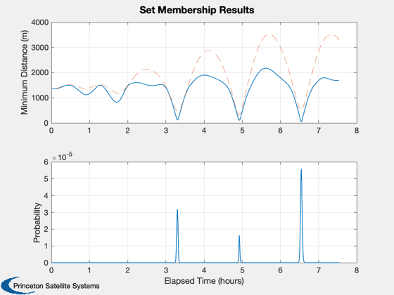
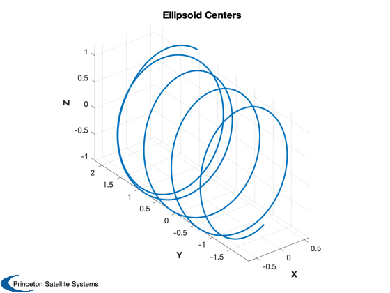
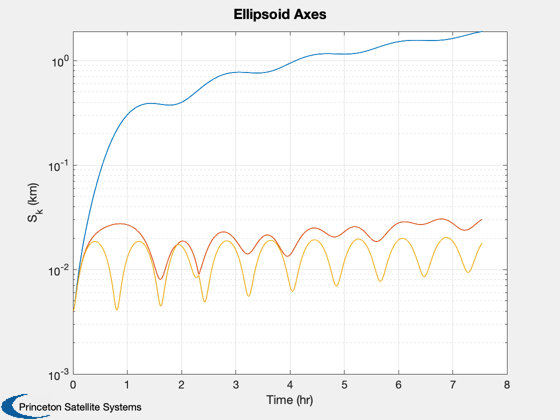
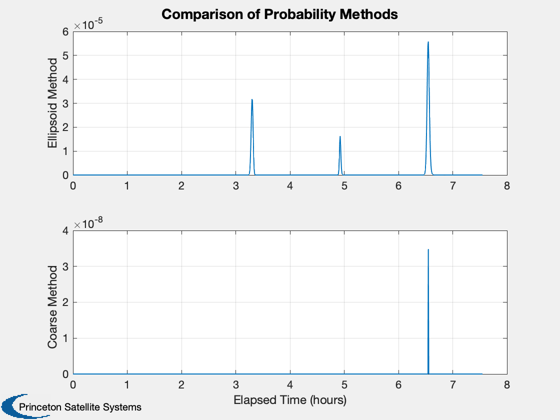
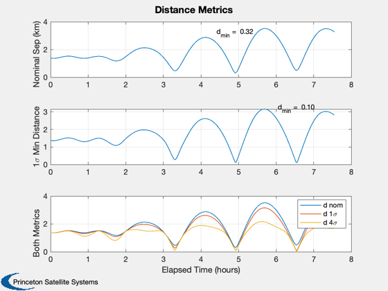
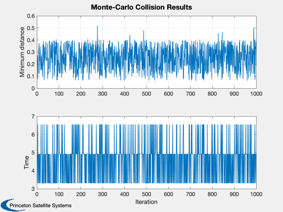
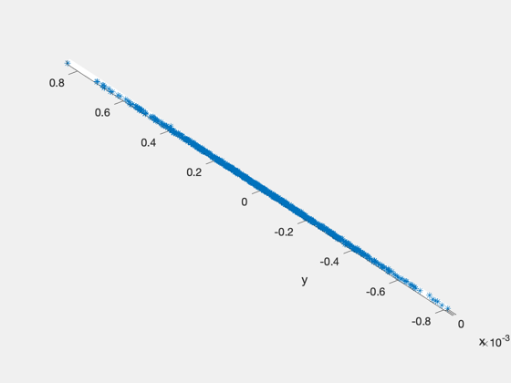
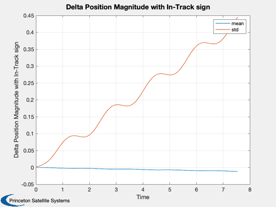
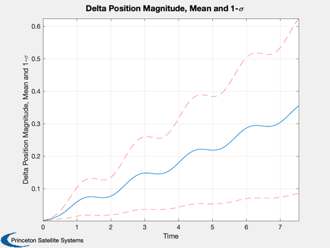
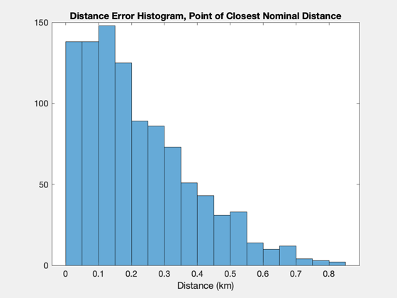

Collision monitoring demo: compare CollisionSurvey and coarse methods.
------------------------------------------------------------------------
References:
J. Russell Carpenter, "Conservative Analytical Collision Probability for
Design of Orbital Formations", Goddard Space Flight Center, 2004.
Mark Campbell, "Collision Monitoring Within Satellite Clusters", IEEE
TRANSACTIONS ON CONTROL SYSTEMS TECHNOLOGY, VOL. 13, NO. 1, JANUARY 2005
------------------------------------------------------------------------
See also Plot2D, Plot3D, IntersectLineAndEllipsoid, Mag, Unit,
CoarseProb, CollisionInit, CollisionMonteCarlo, CollisionSurvey,
VerifyCollStruct, FFEccLawdensEqns, ManeuverStruct2AccelVector, M2NuAbs
------------------------------------------------------------------------
Contents
[dColl, y, mvr1, mvr2] = CollisionInit(1);
dColl.initBounds = dColl.initBounds*10;
dColl = VerifyCollStruct( dColl );
dColl.scalev = 4;
dColl = VerifyCollStruct( dColl );
disp('First calculate 4-sigma distances and probabilities...')
tic
[prob, dMin, xhat, Shat, tProp] = CollisionSurvey(dColl,0,[y(:,2)-y(:,1)],mvr1,mvr2);
toc
nu0 = M2NuAbs(dColl.eRef,dColl.MRef);
nuF = M2NuAbs(dColl.eRef,dColl.MRef+dColl.rate*tProp);
xH1 = FFEccLawdensEqns( y(:,1), nu0, nuF, dColl.eRef, dColl.rate );
Plot2D([tProp-tProp(1)]/3600,[1000*cell2mat(dMin);cell2mat(prob)],'Elapsed Time (hours)',...
char({'Minimum Distance (m)','Probability'}),'Set Membership Results');
subplot(2,1,1); hold on;
plot([tProp-tProp(1)]/3600,1000*Mag(xhat{1}(1:3,:)),'--')
xhatA{1} = xhat{1} + xH1;
xhatA{2} = xH1;
Plot3D(xhatA{1}(1:3,:),'X','Y','Z','Ellipsoid Centers'); axis equal; view(3)
Shat{2} = repmat(diag([1 1 1]*(dColl.lenSC/1000)^2),[1,1,length(tProp)]);
S = zeros(3,length(tProp));
for k = 1:length(tProp)
S(:,k) = sqrt(svd(Shat{1}(1:3,1:3,k)));
end
Plot2D(tProp/3600,S,'Time (hr)','S_{k} (km)','Ellipsoid Axes','ylog');
First calculate 4-sigma distances and probabilities...
Elapsed time is 0.142613 seconds.
  
Comparison to Carpenter's 'coarse' method
dColl.scalev = 1;
dColl = VerifyCollStruct( dColl );
disp('Calculate 1-sigma ellipsoids...')
[prob1, dMin1, xhat1, Shat1, tProp1] = CollisionSurvey(dColl,0,[y(:,2)-y(:,1)],mvr1,mvr2);
disp('Coarse probability method, using ellipsoids...');
probC = zeros(1,length(tProp));
rAvoid = dColl.lenSC/2/1000;
for k = 1:length(tProp)
[u, s] = svd(Shat1{1}(1:3,1:3,k));
yI = IntersectLineAndEllipsoid( [0;0;0], u'*Unit(-xhat1{1}(1:3,k)), sqrt(diag(s)) );
sigmaU = Mag(yI);
probC(k) = CoarseProb(Mag(xhat1{1}(1:3,k)),rAvoid,sigmaU+rAvoid);
end
Calculate 1-sigma ellipsoids...
Coarse probability method, using ellipsoids...
Plot results of the two methods
tPlot = [tProp-tProp(1)]/3600;
Plot2D(tPlot,[prob{1};probC],'Elapsed Time (hours)',...
char({'Ellipsoid Method','Coarse Method'}),'Comparison of Probability Methods');
dNom = Mag(xhat1{1}(1:3,:));
Plot2D(tPlot,[dNom;dMin1{1};dMin{1}],'Elapsed Time (hours)',...
char({'Nominal Sep (km)','1\sigma Min Distance','Both Metrics'}),...
'Distance Metrics','lin',{1,2,[1 2 3]});
legend('d nom','d 1\sigma','d 4\sigma')
subplot(3,1,1)
[dNomM,iMin] = min(dNom);
text(tPlot(iMin)-0.5,3.2,sprintf('d_{min} = %5.2f',dNomM));
subplot(3,1,2)
[dMinM,iMin] = min(dMin1{1});
text(tPlot(iMin)-0.5,3.2,sprintf('d_{min} = %5.2f',dMinM));
disp('Monte-Carlo simulations using CollisionMonteCarlo');
M = dColl.MRef+dColl.rate*tProp;
aC2 = ManeuverStruct2AccelVector( mvr2, tProp );
[prob,dMin,tMin,drH] = CollisionMonteCarlo( dColl, y(:,2)-y(:,1), aC2, tProp, M );
Monte-Carlo simulations using CollisionMonteCarlo
Generate matrices...
Propagate...
50
100
150
200
250
300
350
400
450
500
550
600
650
700
750
800
850
900
950
1000
Probability of collision:
0
      